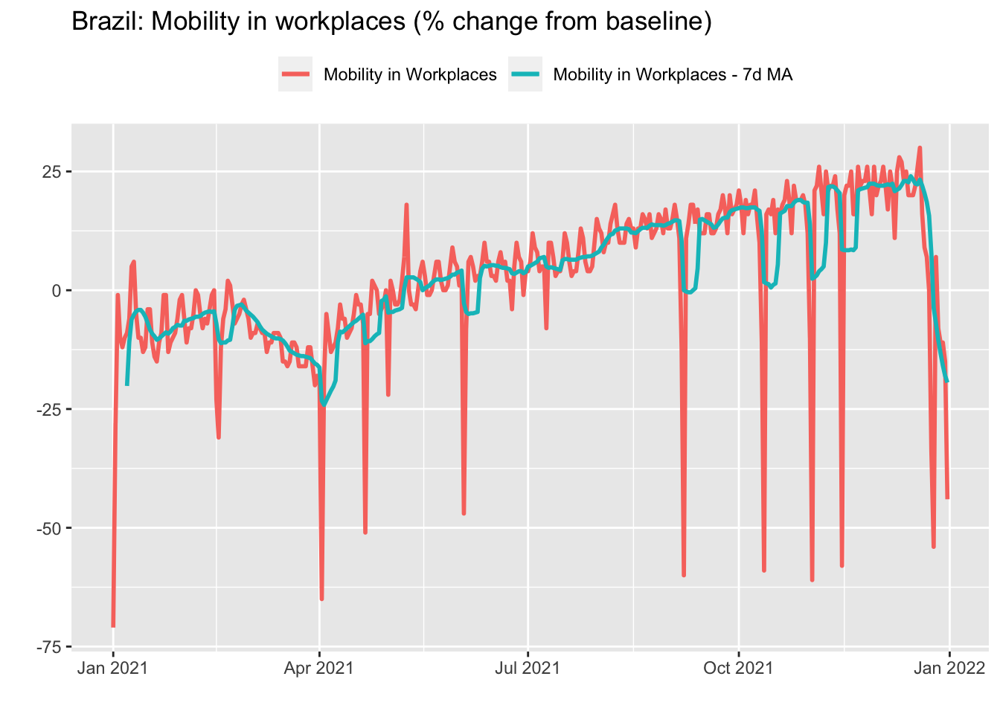

Windowing operations are typically defined as calculations performed over a sliding partition of an array – for instance, rolling means and sums. Other useful operations include accumulating values in a sequence, computing leading or lagged values and so on. In common, all these operations involve doing calculations using specific positions in an array. That’s why I call them Indexing operations. In the coming sections, we will see applications of this type of operation.
3.1 Rolling means
Rolling operations are routinely employed as a means of smoothing volatile time series or to mitigate the presence of seasonal effects. Take the Google Mobility data for Brazil in 2021 we saw in the first Chapter. Remember that this data has a daily frequency and that mobility in workplaces is higher on weekdays. Therefore, a simple strategy to remove this seasonal pattern is to take the 7-days rolling mean.
For this, we can use the roll_mean function from the RcppRoll package. In addition to mean, the package provides functions to compute several other rolling functions – minimum/maximum, median, standard deviations, products and so on. Also, we can use the suffixes l(eft)/c(enter)/r(ight) instead of the align parameter inside the function call to align the window used in the calculations.
gmob_data_br_7dma %>%ggplot(aes(x = date)) +geom_line(aes(y = mobility_workplaces, color ='Mobility in Workplaces'), lwd =1) +geom_line(aes(y = mobility_workplaces_7dma, color ='Mobility in Workplaces - 7d MA'), lwd =1) +theme(legend.position ='top') +labs(title ='Brazil: Mobility in workplaces (% change from baseline)',x ='',y ='',color ='' )

3.2 Accumulated in n-periods
Taking the rolling mean to smooth out very volatile time series or to mitigate the seasonal pattern is a natural choice when we are interested in the level of the series. However, when dealing with ratios the most appropriate procedure is to compute the accumulated values in twelve months for monthly series or in four quarters for quarterly series. For instance, take the monthly US CPI data we saw on the first Chapter.
cpi_12m <- cpi_tbl %>%arrange(date) %>%mutate(value_12m = (roll_prodr(1+value/100, n =12)-1)*100 )
Sometimes we are interested in looking at the series in terms of its level rather than its variation. This is particularly useful when we have reasons to believe that the data should lie within a given range or return to an expected path. In order to get the level of a series from its variations, all we need to do is accumulate its variations over time. Using the data on US CPI, we have:
Looking at the series in level make it easier for the analyst to conjecture possible scenarios for inflation. For example, it could either remain constant by extrapolating the last value or progressively return to the pre-covid path.
3.4 Lagged and leading values
Leads and Lags of a time series are generally used in regressions, but occasionally appear in graphs that seek to compare two or more series that have a non-contemporary relationship. Also, knowing how to refer to past or future values of a series can be useful for performing calculations – computing changes from a baseline, for example. The lead and lag functions from dplyr package make this task very easy.